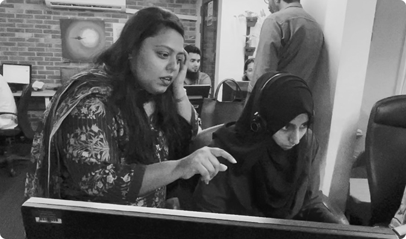
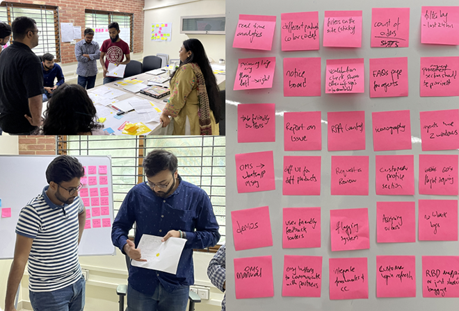
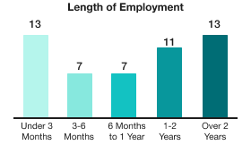
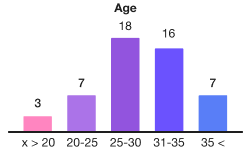
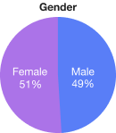
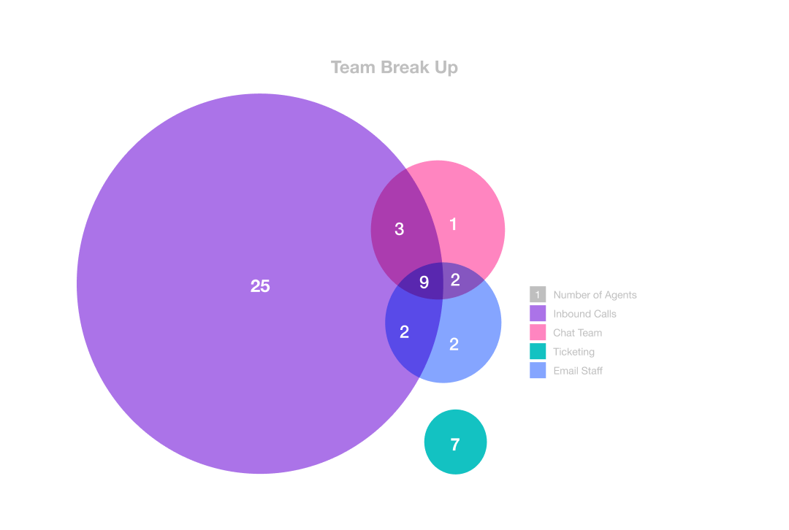
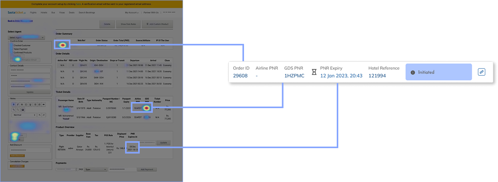
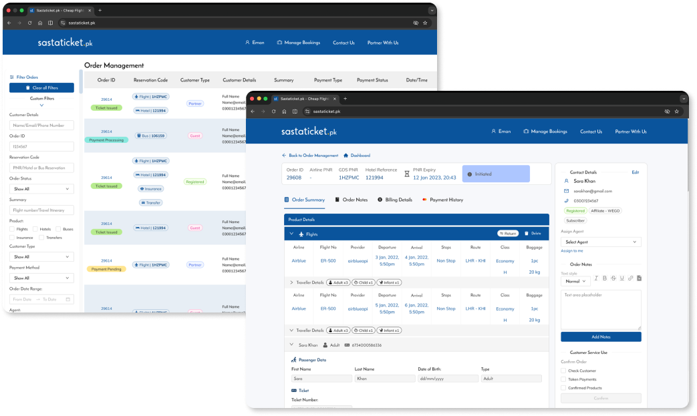

< 3 months of experience
Struggle with workflow complexity, makes frequent calculation errors, Needs guardrails in the system to prevent mistakes.
Redesigning a legacy product (+20% first-call resolution)
Internal Tools · Legacy Redesign · User Research · Personas · Stakeholder Workshops · Heatmap Analysis · Information Hierarchy · Design System
Company:
Sastaticket.pk
Role:
Product Designer
Year:
2021 - 2022
Team:
Fatin Nawaz (Product Manager) Mustafa Hassan (Product Manager)
Sastaticket is an online travel agency that relies on its customer service team to handle large volumes of calls from customer queries to order confirmation. This team of 54 agents was the spine of the platform.
Customer service agents struggled to use a cluttered internal order system which lacked reliable and updated information on flight details, pricing errors and refunds. This had led to an average handle time of 4 mins per query which was too long given the amount of queries the team dealt with daily.

I worked with the product team on discovery workshops, user research, information hierarchy & UI redesign.
We ran workshops with the customer service team to understand the major pain points of customer queries and what they struggled with in the current system.

View DocumentationWe conducted interviews and surveys with members of the CS team to flesh out their pain points and personas. The CS team consisted of about 54 agents and 4 managerial leads.




CS team survey results
A majority of the CS agents were aged 25-35. The most illuminating factor however was length of employment which revealed that approximately 25% of agents had been working for under 3 months, while over 47% had been working for over a year. Based on these findings we developed three personas within the CS Team.
Struggle with workflow complexity, makes frequent calculation errors, Needs guardrails in the system to prevent mistakes.
Struggle with multitasking, miscommunication and commitment. Frustrated with the limitations of the current OMS.
Quietly built workarounds, cross-checking data for pricing, fare rules, and live flight information as the system never earned their trust.
Using heat maps we identified the most interacted with features, and placed those in single header bar for each order. This practice informed our component design where we grouped actions and functions in terms of priority and similarity.

Heatmaps to component

Redesigned Interface
We developed a design system that presented order information clearly and used a system of color coding to highlight important data. A color coded system to help users differentiate between order statuses. This allowed the agents to understand at glance where in the journey the user is and how to better serve and guide them.

| User Metric | Sept 2021 | Oct 2022 |
|---|---|---|
| First Call Resolution
(Resolved on first call / Total cases) × 100
|
65% | 85% |
| Average Handling Time
(Talk + Hold + Wrap time) / Total calls
|
4 mins | 2.75 mins |
| Average Customer Wait Time
Total wait time / Total calls
|
3 mins | 1.5 mins |
| Customer Satisfaction Score
(Positive ratings / Total responses) × 100
|
85% | 90% |
| Net Promoter Score
% Promoters - % Detractors
|
8 | 9 |
| User Satisfaction
(Avg. survey score / Max possible) × 100
|
70% | 87.5% |
This was one of my first professional projects as a product designer. It gave me the opportunity to do primary user research and develop a design system. This project had various stakeholder departments and allowed me to conduct hands on research.